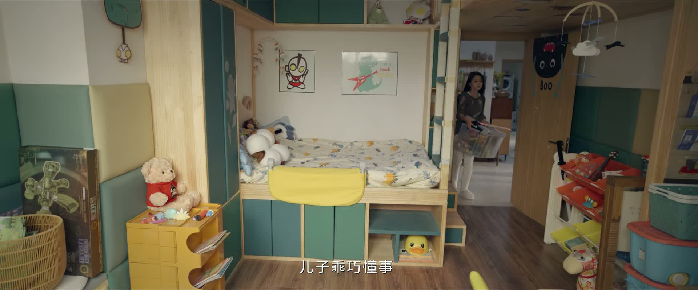
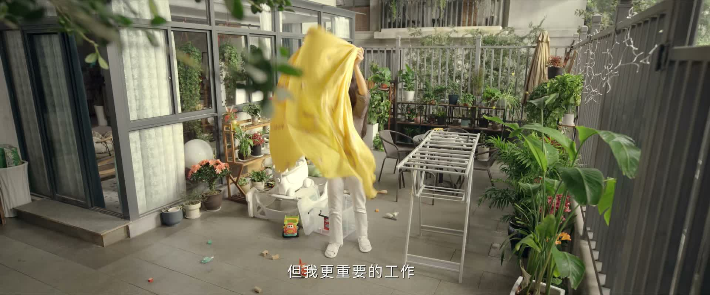
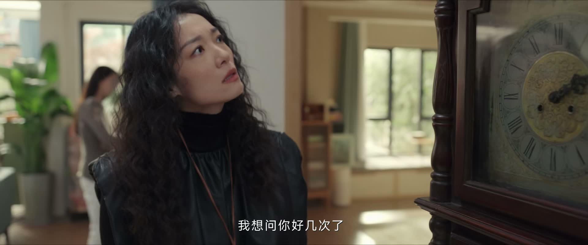
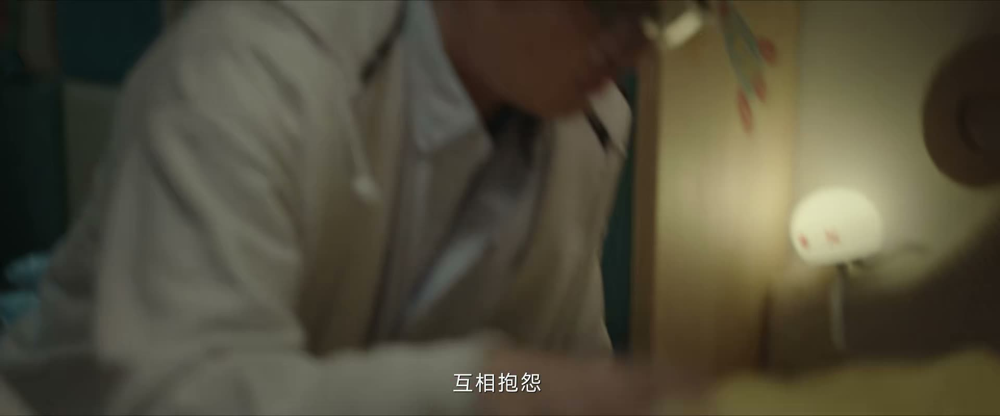
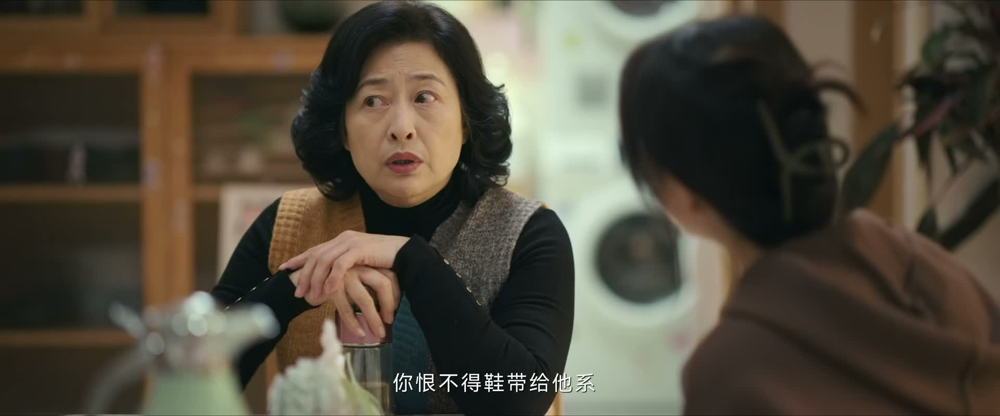
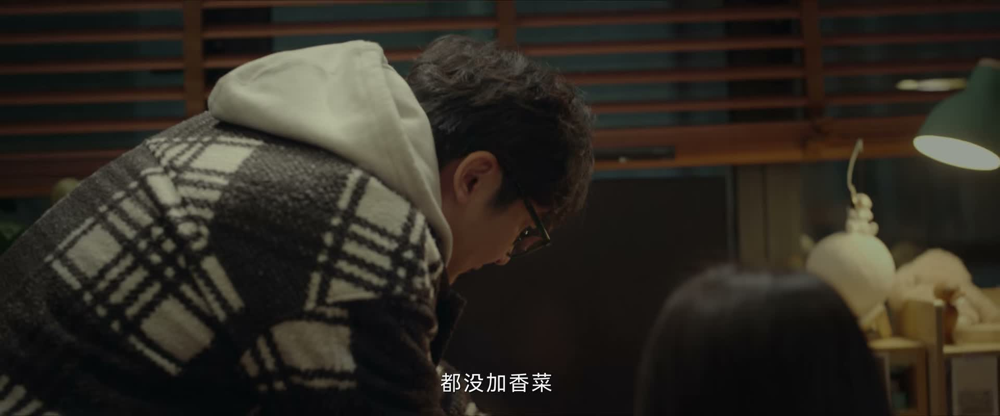
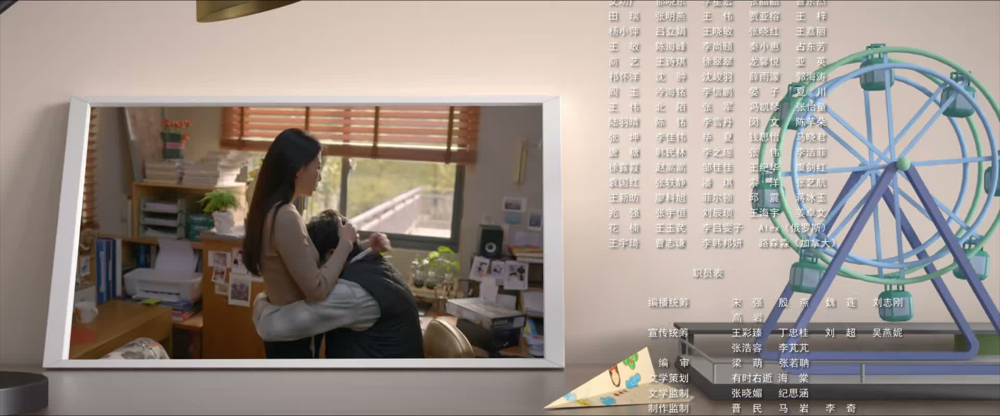

车莉
全职妈妈 · 公众号写手（殷桃 饰）家里的「规矩制定者」。理性、有原则、嘴上不饶人但心软，护娃时战斗力拉满。

Drama Recap · 剧情图文总结
第 1 集 · 一天之内，四条线同时引爆
职场 · 育儿 · 家庭 · 事业，全都撞在同一天
公司空降「周扒皮」式新领导、儿子在学校挨打、外婆的宠溺全面开战——一天之内，职场、育儿、家庭、事业四条线同时在车莉与周全这对中年夫妻身上引爆。
《小夫妻》第 1 集用一天的时间轴，把一对中年夫妻的「双线生活」摊开在观众面前：白天，周全的公司空降了总部来的吕经理，一场技术方案「批斗会」加一次「迟到 5 分 47 秒」的训话，把互联网大厂的加班文化刻画得淋漓尽致；同一时间，车莉被学校一个电话召走——儿子周艾文和女同学打架吃了亏，她在办公室与护短的思怡妈妈唇枪舌战，最后用「带娃去医院做检查」反将一军。夜晚回家，宠孙无度的外婆和讲究规矩的车莉，因为一颗糖、一次作业正面开战，藏在床单下的「防尿床偏方」更是让人啼笑皆非。夫妻俩在「生不生二胎」「何时兑现全家出游」之间来回拉扯，周全当场立誓第二天八点出发。出发当天，公司突发客户系统故障，周全硬着头皮「溜号」，一家人总算踏上旅途。片尾，编辑一通催稿电话预告「新书提前发售」——车莉事业的爆红前夜，正在逼近。
清晨，车莉去早市买菜，周全在家带娃。夫妻俩一边忙活一边打手机游戏，把关卡里的「坏人」当成共同敌人，「他太强大了，我扛不住了」「我先按住他，我做完饭就来帮你」——默契得像打了多年仗的战友，被画面外的观众看了个正着。
儿子周艾文醒来，绘声绘色讲起自己的梦：「我梦见我要上厕所，结果马桶没了……我跑到街上全是车，我着急死了。」车莉追问「最后尿出来了吗」，小家伙骄傲地宣布「尿出来了」，逗得全家人哭笑不得。
关键台词

周全送孩子上幼儿园，一路与街坊寒暄「早啊」「今天吃油条」。此时车莉的画外独白上线，向观众介绍这个家：她是全职妈妈，空闲时间喜欢在公众号上写点东西，「但我更重要的工作，是照顾家里一大一小」。
在她的描述里，老公是「标准的中年 IT 从业者，有原则、有理想，也有叛逆」；儿子懂事乖巧，「喜欢听故事，喜欢搜索，喜欢出去玩」。一句「一样的男人」的调侃，把这个普通又温情的三口之家的底色铺好了。
关键台词
周全所在的分公司迎来总部空降的领导吕经理，新官上任三把火。会上，一位同事自信满满地汇报技术方案——50 台云服务器、128G 消息队列、容器动态增补——却被吕经理连珠炮式追问：
「如果活动当天被人黑，你有预案吗？」「40 万 QPS、5 台机器，考虑过端口压力吗？」对方一个也答不上来。吕经理再补一刀：「你不是在写代码，你这是代码大纲，小学生作文。」散会时扔下一句「新方案尽快拿出来」，当天加班修改。办公室里哀声一片，有人小声吐槽这领导「一来就让我们擦屁股」。
关键台词

出版社的编辑（车莉口中那位「文豪」）掐指一算登门，开门见山宣布：「我掐指一算，你要红了。」理由是——本来下个月才上市的书提前了，而接下来这半个月，市面上没有其他能打的新书，正是最好的空窗期。
车莉却不领情：「现在愿意看纸质书的人越来越少，我这么一个籍籍无名的小作者，就算出版社印了几万本，能卖出去多少，谁知道呢。我呀，没有那个野心，也没有那个命。」编辑不依不饶，撂下预言：「我说你要红了，你肯定就红了。」这段对话，为全剧的事业线埋下了最重的一颗雷。
关键台词
田老师一个电话把车莉叫到学校：周艾文和女同学思怡打架了，还挨了打。车莉先教育儿子「不能动手打人，尤其是女孩子」，转头就迎来了思怡妈妈的阴阳怪气——对方嘲讽艾文「一推就倒，不如报个强身健体的兴趣班」。
车莉不慌不忙，高能回怼：「我们家儿子打架真的不如你们家女儿，因为我们总是在家教育他，打架是解决问题最愚蠢的办法。」再补一刀「我不会去评价你的女儿够不够淑女，我会尊重她的个性」。最后，她当场要求对方教育女儿给儿子道歉，还要田老师开请假条，「带她到医院再做个检查」——明面上是心疼儿子，实际上是让对方家长难受。
回家的路上，儿子反而教育起妈妈来：「你这么大点事还斤斤计较，显得有点没风度。」车莉又气又好笑：「你小脸都打成小花猫了，你妈我心疼，反倒是我没风度了？」
关键台词

周全下班回家，看到儿子脸上的伤。夫妻俩的对话从互相怪罪开始：车莉怨「我觉得是你妈惯的」，周全怪「我觉得更多的是怪你，这个年纪的男孩特别需要爸爸陪，你陪他太少了」。吵到一半，两人迅速达成共识——「咱们现在把互相抱怨一点意义都没有，想解决办法。」
周全的「办法」出人意料：再生一个「彪悍的妹妹」保护儿子。车莉则翻出母亲偷偷塞进床单里的「防尿床偏方」——买一只大公鸡，把肠子烤干，和面粉烙成饼垫在床下——又气又笑：「这也太愚昧了吧。」
聊到加班，车莉一针见血：「天天这么晚回家，那不是因为来了个“周扒皮”吗？」她话锋一转，逼周全兑现承诺：说好的全家出游已经拖了两年，「艾文等了两年了，再不出去就憋疯了」，这次必须立誓、不许再爽约。
关键台词

外婆（车莉的妈妈）上门，从进门起就在「拆车莉的台」。儿子不想写作业，外婆马上护着：「宝贝不怕，外婆不是冲你」；顺手就塞糖，被车莉拦下「她牙不好，不能吃甜的」；车莉立规矩「回家先洗手，再做作业」「自己拿书包」，外婆一句「孩子多累，你别让孩子弄这些」全盘否定，还反手戳车莉：「三岁的时候你还拿个皮儿遮着她尿尿，叫你这么带，她现在都不会自己尿尿。」
车莉忍无可忍，跟母亲摊牌：「我跟您说过多少次了，吃饭的时候不要让她先吃，这样她会觉得她比所有人都重要。我给她立的所有的规矩，只要你也来，全破。你不在的时候她乖着呢，您这么惯着她，她会毁了。」
祖孙三代的育儿理念在小小的客厅里正面碰撞——外婆的「舍得爱」与车莉的「立规矩」，谁也没有说服谁。
关键台词

交叉剪辑切回公司。周全和同事老余刚修好 bug，却因为送项目报告迟到了 5 分 47 秒，被吕经理拎进办公室训话。吕经理算了一笔「时间账」：「地球一分钟转 27.8 公里，6 分钟就是整整一百多公里。如果这是战争，根本用不了 6 分钟，开发就结束了。」
周全当场顶嘴：「您说那五分四十七秒，关于时间的重要性我完全赞同。但是您的方式有点不太公平——您光算他迟到了五分四十七秒，如果算我们加班的话，那应该是五分四十七秒的恩赐了。」
吕经理不接话，让他「把企业文化背一遍」：「天道酬勤、众志成城、感恩的心。」顿了顿，补上一句「你只需记住后四个字」，把周全噎得说不出话。
关键台词
深夜，夫妻俩就着一碗「今天两碗都别放香菜」的面吃夜宵。车莉聊起这些年让妈妈帮忙带娃的纠结：「老公，我现在真挺后悔，这些年让我妈帮着我带文。但说这话有点不孝……我感谢她，但是她把我的儿子交给她，还是得废你。」周全又搬出那句玩笑：「生个二胎，咱们把艾文抢回来。」
聊到出游，车莉早已把账算得清清楚楚：「两天两夜，比一天一夜的房费还便宜。而且艾文醒了就能玩，相当于他有整整两天可以玩。」周全夸「长得漂亮，还会规划」，转头就被约法三章：「明天不要这么晚回来了，八点之前必须到家。」
外婆收拾行李的阵仗更夸张——被子要带（「哪知道酒店的被子质量好不好，我外孙过敏怎么办」）、玩具要带、杯子要带，塞不下的就再来一个箱子：「孩子要带，我不怕，我有劲。」
关键台词

出发当天，公司突发状况——「美美那边客户系统出问题了，现在无法运行」，吕经理当场下令：「今明两天，把这件事情解决掉。」周全拜托同事小婷打掩护，自己硬着头皮「溜号」，开车带着一家老小奔赴 60 公里外的度假地。
路上，周全吐槽公司那帮年轻人「天天被那种“扒皮”训，抗压力极浅还乐呵呵」，一家人笑作一团。抵达游乐场，艾文和一个叫诺米的小女孩都想骑木马，外婆护孙心切，差点和对方家长吵起来；车莉则主张「让小朋友们自己解决他们的问题」。
最后，艾文主动向诺米道歉：「不好意思，我也有不对的地方。」两个孩子握手言和。外婆护短、车莉讲理、孩子懂事——同一个场景里，三代人的处理方式高下立见。
关键台词

游玩间隙，车莉接到编辑的电话。信号不好，通话断断续续，但「姑奶奶」的指令清清楚楚：「你新书要提前发售了，赶紧写篇稿子，预热用的。」车莉试图用「我在外面度假呢，好不容易有个假期」推脱，被一句「你也不能逃避工作」堵了回来——「我不管，明天，最晚后天，我要见到那篇稿子。」
放下电话，车莉望向玩得正开心的家人，若有所思。就在这个假期，她的公众号事业和写作生涯，正被推向一个全新的方向。片尾曲响起：「很多年，两个人在一起，再波澜不惊，平淡中前行……正好有一个你，在身边。」
关键台词
家里的「规矩制定者」。理性、有原则、嘴上不饶人但心软，护娃时战斗力拉满。
标准的中年程序员，爱家嘴硬，在加班文化里挣扎的「打工人」，承诺出游拖了两年。
懂事、有同理心。挨打了还劝妈妈「要有风度」，游乐场主动向小朋友道歉。
宠外孙无底线，是车莉育儿路上最大的「对手」，连防尿床偏方都信。
新官上任三把火，被同事私下吐槽「周扒皮」式管理。
预言车莉「要红了」，结尾催稿电话将她的新书提前发售，事业线推手。
护短、说话带刺，和车莉在学校正面交锋，被反将一军。
车莉用「打架是解决问题最愚蠢的办法」的「风度论」回怼思怡妈妈，再以「带娃检查身体」施压，全程不吵不闹却句句到位，爽点拉满。
5 分 47 秒的迟到账本、地球自转的比喻、背企业文化的羞辱——空降领导的三把火，让每一个被加班文化折磨过的打工人狠狠共情。
外婆的宠溺（吃糖、不用写作业、防尿床偏方）与车莉的规矩正面碰撞，每句台词都像现实家庭生活的镜子。
互相吐槽「你妈惯的」「你陪太少」，转身又统一战线；深夜一碗面、一句「八点必须到家」，都是烟火气里的甜。
职场、育儿、家庭、事业在同一天内全部引爆，信息量大而不乱，节奏明快，为全剧的家庭角色互换埋下伏笔。
编辑口头预言加上结尾催稿电话，车莉的公众号与新书即将爆红，夫妻的家庭分工将被彻底打破。
吕经理的压迫式管理、无休止的加班、迟到训话，都在为后续「周全失业、回归家庭」的剧情主线铺路。
外婆的过度宠溺让车莉萌生「再生一个自己带」的念头，二胎成为贯穿全剧的家庭话题。
艾文「弱不禁风」、外婆的保护式育儿，与车莉「要有抗打击能力」的理念冲突，注定在后续不断发酵。
剧里的鸡毛蒜皮，往往是人生的缩影。这些情节不只是故事——当你在现实中遇到同样的处境时，它们能提醒你：先做什么、别做什么、怎么说才有效。
情境：周艾文在学校挨了打，思怡妈妈却当着孩子的面阴阳怪气「一推就倒，不如报个兴趣班」，场面一度很难看。
情境：吕经理空降，会上批方案、迟到了 5 分 47 秒也训话。周全当场顶嘴「那应该是五分四十七秒的恩赐了」，结果只换来一句「你只需记住后四个字」。
情境：看到儿子受伤，车莉怪「你妈惯的」，周全怪「你陪他太少了」。吵到一半，两人主动刹车：「互相抱怨一点意义都没有，想解决办法。」
情境：外婆宠孙无度，糖照塞、作业不用写，车莉忍不住当着孩子的面摊牌：「我立的规矩，只要你也来，全破。」
情境：编辑登门预言「你要红了」，理由是出版空窗期、新书提前。车莉却连连摆手：「我没有那个野心，也没有那个命。」编辑坚持：「我说你要红了，你肯定就红了。」
情境：周全答应了孩子两年的出游，出发当天公司突发故障，他宁可「溜号」也要赴约；片尾编辑的催稿电话，又让假期戛然而止。